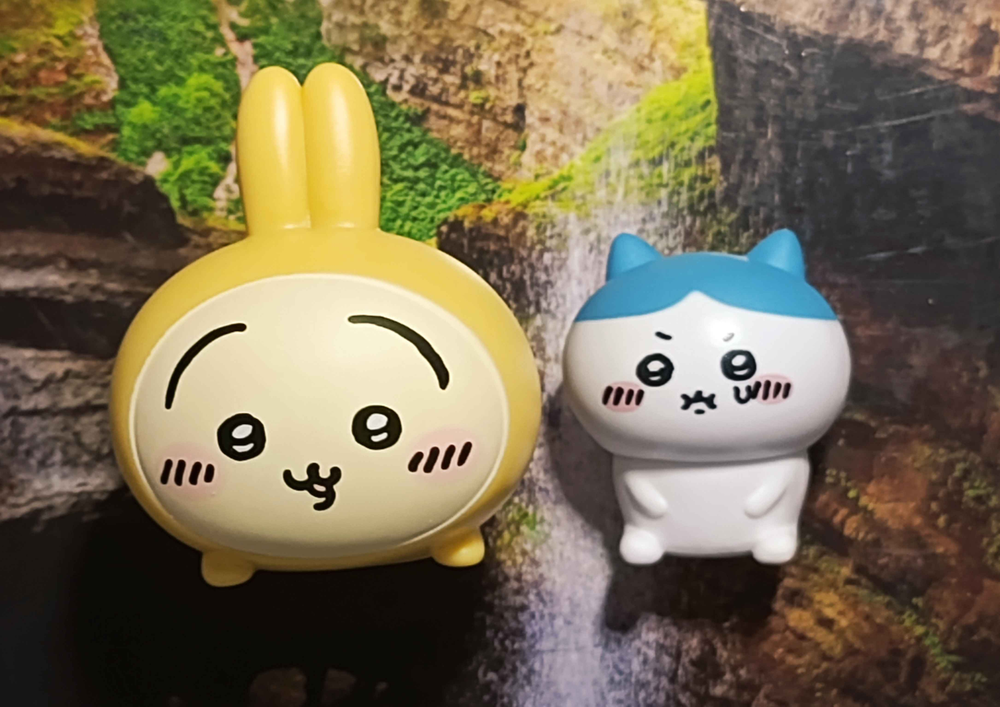

February and beginning of March thoughts
★ 02 March 2026
Time has changed everything… I don’t know if it is just me or my commitment is not enough. I would end up scrolling down on other neocitizents’ updates and peeking at sites. As I don’t have much to say. You could see that I admire a lot of sites from afar, skimming their introduction and looking up at their interests made my day.
But there is a feeling I felt being left alone. Neocities feel more like social media again… and I don’t want that to happen. I will try to leave a guestbook comment on my mutuals as I explore their pages…
Even though I promised that, I’m not sure if I will do that (probably when I’m actually free)… These days I've pretty much lost hope in myself as games control most of my Tet holidays. I will start out to be productive again eventually :”>
At the end of Tet I got some lucky money, an Usagi gachapon, and a Hachiware mini figurine.
They look so cute!
My sis just went on a trip to Fukuoka, Japan with her husband and she bought them for me.
I’m very happy to get my first Hachiware! :>

Usagi and Hachiware got through gachapon
(Time skipping everything here. I wrote these above before the date 24/2. Now back to reality)
Sunday, 1st March
It’s that time of the season again, and god, outside is already so hot. I could feel that I don’t sweat as much as before but when it is both humid and hot you will soon miss winter and autumn.
I had a crazy thought of doing coding commissions and one another category of commission but I think the profit isn’t worth it from what I’m getting. I also think that it is not fair to do so called “coding comms”, it is all said that “keep the web free”. Plus, doing this meant that it defies my ideal mindset of keeping the web free.
As I need the money to give it to my parents in the far future (which is me giving lucky money and expressing gratitude). I’m not sure I could balance time for that, ending up going straight back to thinking “I should really study since how I manage my time is very bad”. Quite the mood for me..
End note
So I got the meadow.cafe guestbook back but most of the comments are gone. I felt bad for not connecting with much of my mutuals.. Luckily I linked their buttons so I could check them regularly. Then again, it is nice to have a small circle.
An old mutual, limovars, fascinated me with their opinions and writings too. Sadly, there were only a few interactions. They preferred to interact with friends around their age (from 1990 to 2005). They’ve been inactive and archived the site for a while now, wondering if they’re okay.. I’m 2006 but I hope someone still in contact with them could answer this question! Thank you!